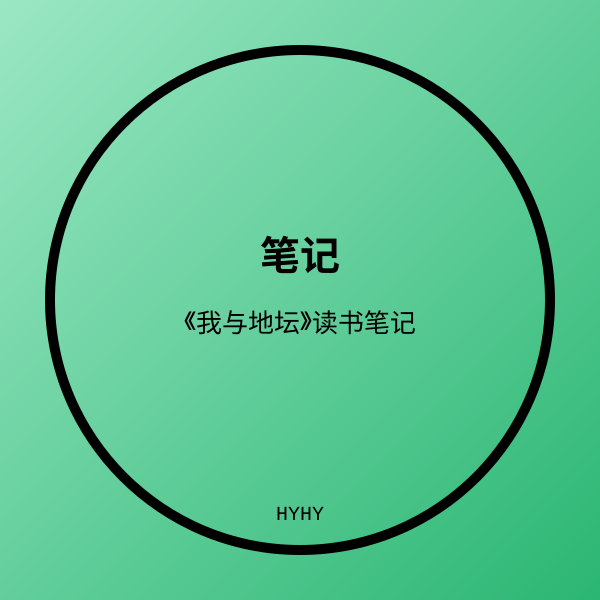

这是一篇用 Hyhyhyyy 传统博客环境撰写的示例文章。把这段说明替换成你的正文即可。
小节标题
正文段落。封面图已放在同目录的 cover.svg，替换为你的图片后运行 blog/sync.py 上传。
- 左侧日期、右侧分类，由 manifest.json 驱动；
- 圆内封面自动取最大内切同心圆；
- 学习页（study.html）会按 manifest 自动列出所有文章。

这是一篇用 Hyhyhyyy 传统博客环境撰写的示例文章。把这段说明替换成你的正文即可。
正文段落。封面图已放在同目录的 cover.svg，替换为你的图片后运行 blog/sync.py 上传。